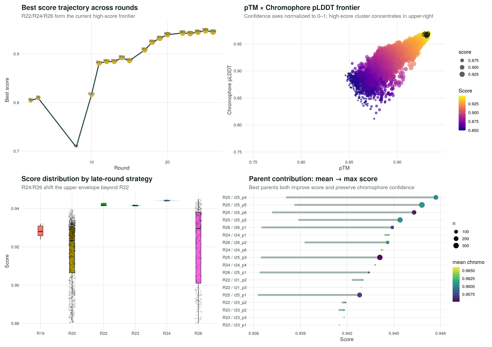
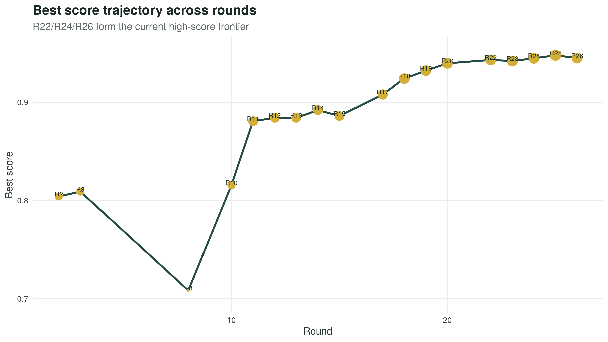
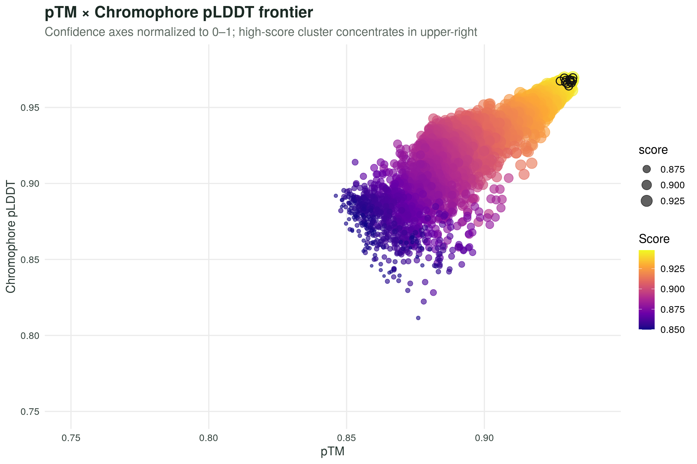
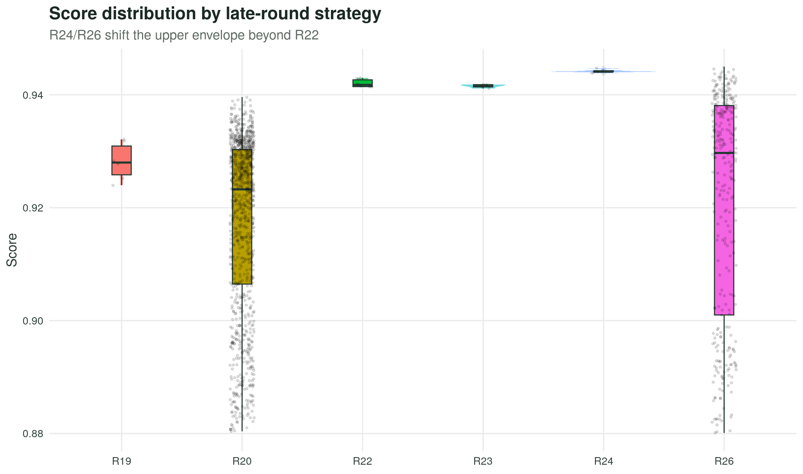
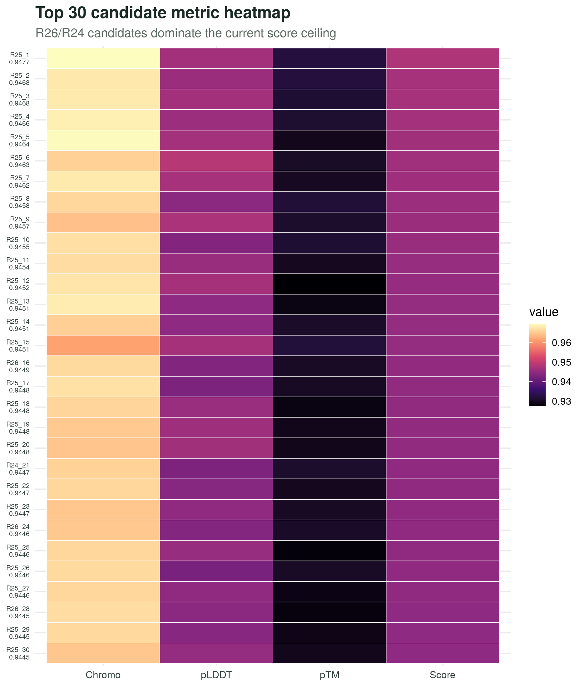
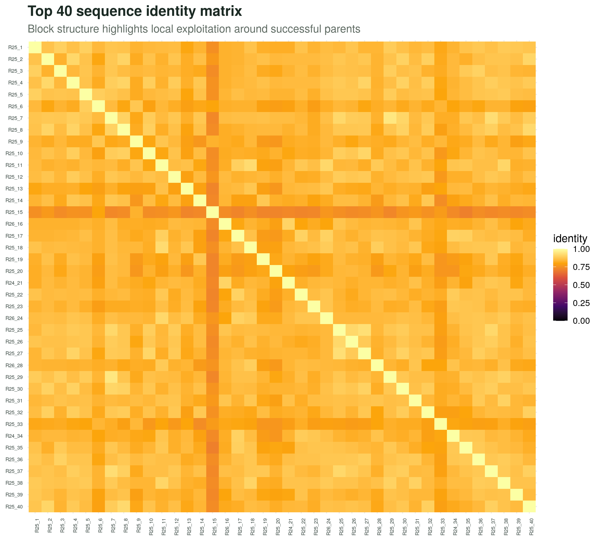
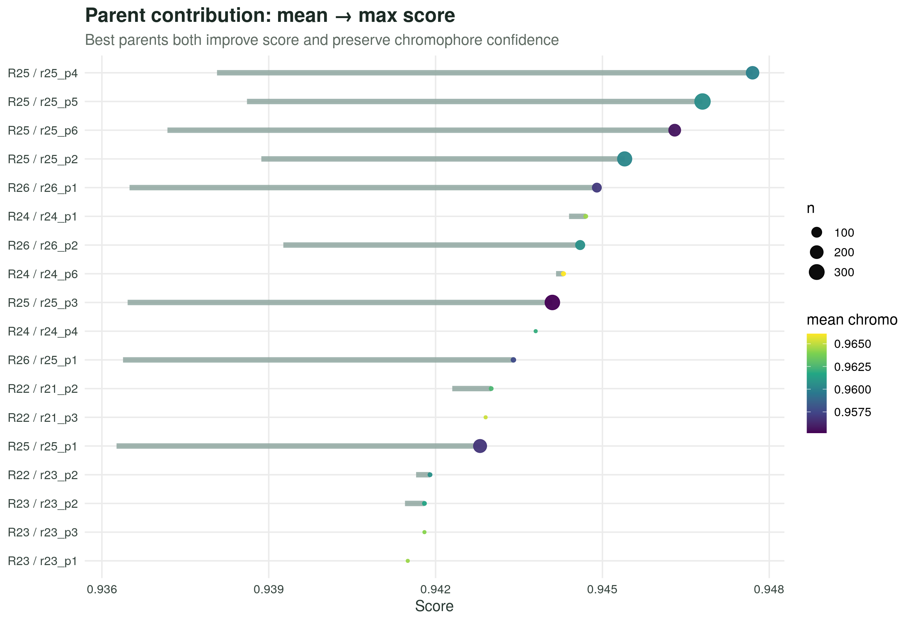

本报告由 R/ggplot2 自动生成，图表已基于统一后的 0–1 pLDDT/chromophore 尺度。重点显示 R22→R24→R26 的高分前沿、各轮分布、Top 候选热图、序列相似性矩阵与父代贡献。
1. 00_composite_dashboard.png

2. 01_score_trajectory.png

3. 02_ptm_chromo_frontier.png

4. 03_round_distribution.png

5. 04_top30_heatmap.png

6. 05_top40_identity_matrix.png

7. 06_parent_contribution.png
